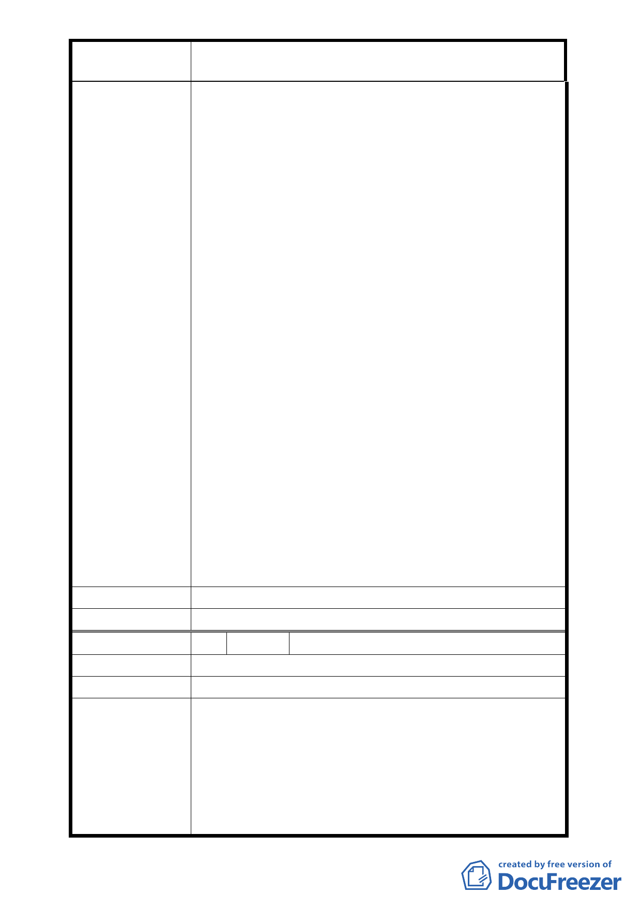

案
建議辦
委員會決議
名
變更「臺北市士林區光華段士林紙廠土地」第三
種商業區（特）細部計畫案
3-2-2 項，都市更新回饋案或經都市涉及及土地開發
許可審議委員會決議通過設立者。附近的義信活動中
心達百分之百、公民會館達百分之七十以上、福林活
動中心達百分之九十以上，確已無法滿足里民之需
求。士林區公所已通過初評，複評也送市府。每次本
里辦各類節慶活動因無適當場所，都是將巷道圍起來
辦理，如遇刮風下雨苦不堪言，真不知如何是好，且
本里為老舊社區，居民也以長者及小孩居多，平時居
民也沒有一個活動休閒場所。巧遇士紙紙廠都市更新
計畫案，懇請委員長官基於愛民、親民的理念，協助
本里爭取士林紙廠回饋於公園用地處上設置 1 處約
50-70 坪區民活動中心，讓老人家有一處休閒活動的
好地方。
2. 士林紙廠回饋公園原設計於南側及西側角為長方形
公園，合乎整體性、開闊性，遇天災地變時又方便疏
散。現變更設計為南側細長到西側進入基地中心為倒
三角，視野不夠開闊抬頭所看到的都是高樓大牆，又
不具整體性，且倒三角出口也較小。
3. 基地規劃由基河路進入從福德路(6 米道路)通捷運及
西側(8 米道路)出基河路，以目前假日上述道路就已
經塞爆了，更何況是開發完成後恐與士林電機一樣大
塞車造成民怨。建請基地內的福德路為既有道路併入
開發後是否應有替代道路，建請相關單位研議打通樹
林街至中正路之路段，以紓解開發後的交通問題。
4. 每遇都市開發更新案交通擁塞問題一大堆，懇請重視
交通及停車路線問題。
法 同上
同編號 1 決議。
編
陳情理
建議辦
委員會決議
號 5 陳情人 楊志清 君
由 建議士林紙廠旁大南路口巷道作為「福德休閒街」提案。
法 同上。
為能配合中央推動都市更新方案、結合士林夜市、台北
藝術中心等開發案，刺激地方經濟繁榮與帶動士林紙廠
周邊地區之環境改善積極作為，本變更案依原計畫規定
開發單位應回饋之福德街造街計畫與認養，其綠美化施
工費用由開發單位負責，並應於 99 年 7 月 1 日前完成；
至於該等環境改造內容、範圍與驗收等事宜授權臺北市
政府都市發展局與申請單位確認。
- 35 -